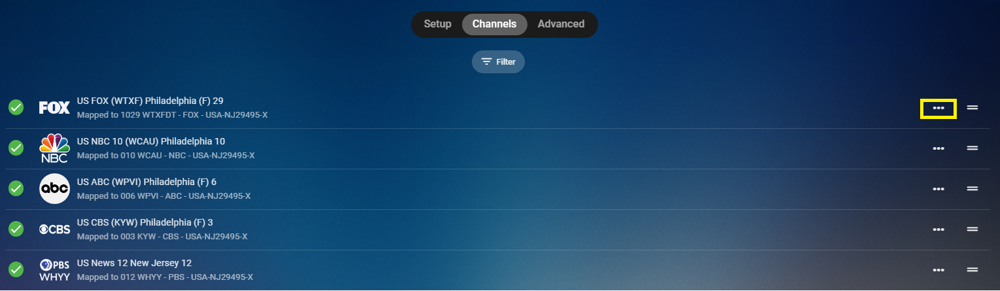
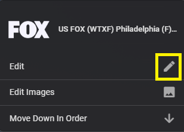
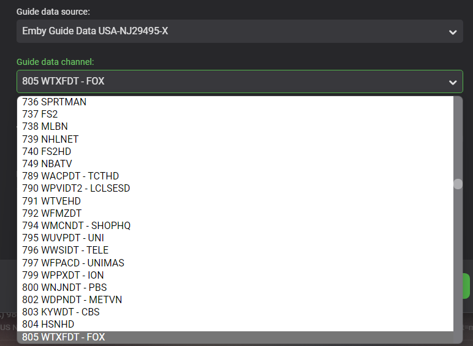

Live-TV-Kanalzuordnung
Das Letzte, was Sie nach der Einrichtung Ihres Tuners und des EPG-Datenanbieters tun müssen, ist, Ihre Kanalliste zuzuordnen.
Emby Server wird versuchen, Ihre Kanäle automatisch mit den für diesen Tuner eingerichteten EPGs abzugleichen. Sie können jeden Kanal manuell ändern, indem Sie den EPG und anschließend die Station auswählen.
Wählen Sie im Live-TV-Menü die Registerkarte Kanal oben auf dem Bildschirm. Klicken Sie auf das 3-Punkte-Menü rechts von jedem Kanal, den Sie bearbeiten möchten.

Klicken Sie auf die Schaltfläche Bearbeiten im Popup-Fenster.

Nun können Sie den EPG-Anbieter sowie die Station aus diesem EPG auswählen.

Klicken Sie auf den Speichern-Button, wenn Sie die Bearbeitung dieses Kanals abgeschlossen haben.
Sie können dasselbe auch direkt im EPG tun. Klicken Sie auf die ganz linke Spalte, die die Stationsinformationen enthält. Klicken Sie im nächsten Bildschirm, den Sie sehen, auf das 3-Punkte-Menü, das dem oben genannten gleichen wird.
Note
In einigen Fällen könnte es passieren, dass Kanäle im EPG fehlen. Dies kann insbesondere bei OTA-EPG-Daten vorkommen. Oftmals, wenn Sie in der Nähe von Marktgrenzen wohnen, müssen Sie möglicherweise einen zweiten EPG mit einer anderen Postleitzahl hinzufügen. Wenn Sie das Glück haben, Kanäle aus verschiedenen Rundfunkmärkten empfangen zu können, ist dies fast immer der Fall (Notwendigkeit eines zusätzlichen EPG-Datenanbieters).
Manchmal müssen Sie möglicherweise versuchen, eine andere Postleitzahl näher an den Sendetürmen einzugeben. Zögern Sie nicht, ein paar Postleitzahlen auszuprobieren, um die benötigten EPG-Daten zu erhalten. Emby Server ist sehr flexibel und ermöglicht es Ihnen, mehrere EPGs hinzuzufügen, nutzen Sie diese Funktionalität bitte, wenn Sie sie benötigen.
Falls Sie einen Kabelanbieter einrichten und fehlende Kanäle feststellen, melden Sie dies bitte in den Foren.